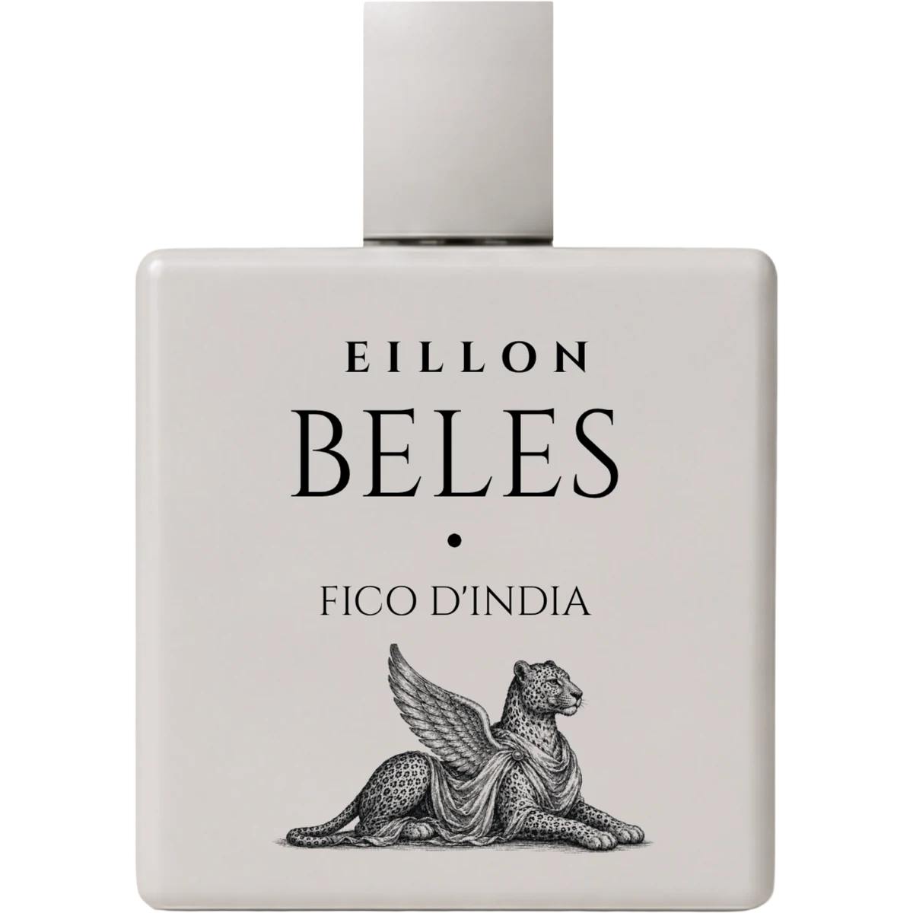

Correspondence · Copenhagen

Afro-Mediterranean Memory Perfumery
EILLON
Red Sea memories,
bottled close to skin.
EILLON
A perfume house where Red Sea heat meets Copenhagen precision — memory made physical.
The House of Memory
A maisoncomposedfrom memory.
EILLON composes intimate, oil-rich parfums from Afro-Mediterranean memory — Red Sea air, desert fruit, rain on stone, café spices, sacred resins, and warm skin, hand-finished in Copenhagen. Each fragrance is a chapter: Beles begins with prickly pear and cactus water; Asmara follows rain on old city stone; Massawa turns toward the Red Sea coast.
- 01 Beauty needs shadow.
- 02 Time needs room.
- 03 Craft needs devotion.

The Maison
Perfume from
place, memory
& skin.
- Beauty needs shadow.
- Time needs room.
- Craft needs devotion.
Each fragrance is a chapter.


Chapter I · The current chapter
BelesFico d'India
Oil-rich parfum · Watery fruit musk
A green-pink cactus-fruit parfum, built to feel airy, watery, sun-warmed, and close to skin.
- Top
- Prickly pear · Cactus water · Pear skin
- Heart
- Hibiscus · Cactus bloom · Green leaves
- Base
- Soft musk · Mineral air · Warm stone
Worn close to the skin — applied once and left to open, never rubbed.
Out of stock
The Scent Atlas
The scent worlds
of EILLON.
Each fragrance begins as a memory of place — desert fruit, rain on stone, Red Sea citrus, and sacred resin.


Imagery sourced from Wikimedia Commons — Habib M’henni, Zil, David Stanley, Photohound.
The Object
A bottle cut from a single block.
- 01
The Cap
A tall rectangular stopper in brushed silver — proportioned to the square and weighted to close without fuss.
- 02
The Block
An opaque square flacon in matte glass, corners softly rounded — flat-faced, architectural, without band or label.
- 03
The Emblem
A winged leopard stippled at the base in fine line, draped in classical cloth — the bottle's only figurative gesture.
- 04
The Lettering
EILLON, Beles, and Fico d'India set in quiet serif above the emblem, pressed into the face.


The Wear
Worn close to warmth.
Pulse
Apply once to wrist or collarbone, then let the accord open on warm skin — without rubbing.
Cloth
Mist lightly over a scarf or lining to carry a close-wearing trail through the day.
Return
Refresh with one spray before evening; the heart notes deepen rather than becoming louder.
We do not make things that compete for attention. We make things that reward it.
Love this moment.
House Correspondence
Letters from the Archive
Principles, rituals, and private notes — six letters folded on the desk, waiting to be opened.